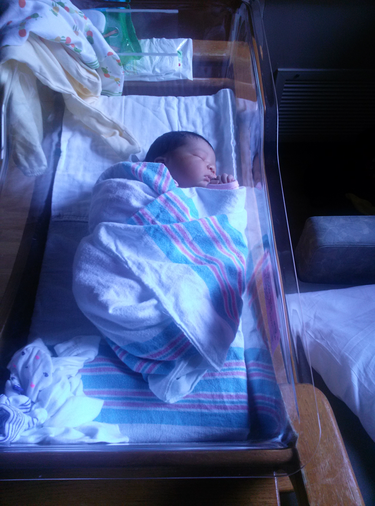
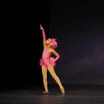
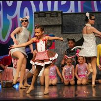
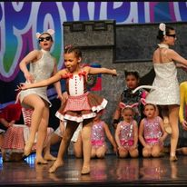
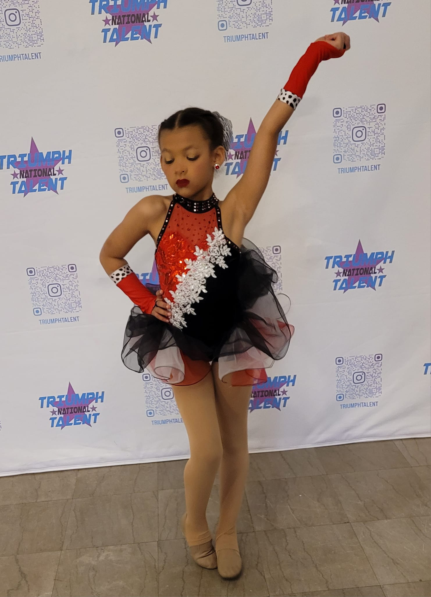

Summary
I wanted to take a moment to explain a few things. The first thing that I would like to explain is that this is the story of how my daughter started to dance up to this current year. Honestly I thought all of this would be a passing fancy. We would go to a few dance class and soon she would loose intrest. Little did I know this passing fancy would grow into a hobby for the whole family.
A star is born
My little princess was born in the 2014. It was an amazing experiance watching her learn to craw, stand, and then walk. Once we reached that point thought it was off to the races as she was everywhere. A short two years later though my wife said "I want to put her in dance.", and this marked the start of your dance juroney.
The first year to year and a half of dance are life changing. For most of this time we going into the studio on the weekends for classes. Then recital came and we got to see what all the time and money was for it was okish but she was like 3 not excatly ready to be the worlds next DDR champ. What we did learn is that she liked the limelight. From that point it was all about getting her into that limelight more. So we auditioned to join the dance team.
2021


The year of 2021 was are second year of dance team but, I count it as the first since 2020 was the year of the great shutdown. She was in two major dances Tiki Room and Ducks in a Row. This year she also learned to do a back walkover.
2022
 


2022 is the third year of dance. This is the year that we got really in to the thick of it. My daughter moved from just being apart of small groups to being a on the stage alone. Not only was this her first year having a solo it was her first year competitiing for Title. My expectation is that you do not win Title your first year but she managed it in two of five compitions. This is the same year that she dance in her first duo.
- Diamonds (Solo)
- Rather be with you (Duo)
- Mambo #5
- Route 66 (Small Group)
- Rainbow Connection (Small Group)
- Shrek (Production)
2023

2023 is the forth year of dance. This year things were kicked up for my daughter as the corogorphy for her solo and duo became more demanding and she joined more small groups. She had already tasted victory and this year the goal was to win as many titles as possible. While she only managed to win one regional Title she did manage to be crowned Miss Pitit Shining Star at the Power of Dance Nationals.
- Cruella (Solo)
- Hide & Seek (Duo)
- Kim Possible (Small Group)
- I Wanna Party (Small Group)
- Troop Beverly Hill (Small Group)
- Lion King (Production)